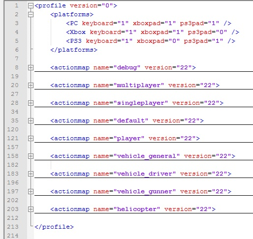

Overview
This document will tell you about creating and modifying action maps yourself to customize and tailor the controls to the needs of your game.
You can find an overview of the controls in the SDK package here:
Here is an overview of the standard setup that you can find in your profile:

You can find the Action Maps XML profiles for all supported platforms inside this file: Game\Libs\Config\Profile\DefaultProfile.xml
The Action Maps Profile file in games released by Crytek is broken down into different sections to group certain controls together for easier reading and configuration:
- multiplayer
- singleplayer
- debug
- flycam
- default
- player
- vehicle
- land vehicle
- sea vehicle
- helicopter
The different sections can be enabled or disabled during run-time from Flow Graph, Lua Scripts and C++ code.
Action Maps
Controls are organized into sections called 'Action Maps', and each of them is a set of key/button mappings for a particular game mode. For example there is an actionmap section for Helicopter controls called "Helicopter", which means everything below that section up to the next actionmap definition consists of key and button bindings that only apply when flying a helicopter. To change your common in-game bindings, go to the section starting with actionmap name="default". There is also sections for multiplayer-specific bindings, and of course any other vehicles or modes you need.
Here is an overview of a standard action map, in this case the standard debug one.
<actionmap name="debug" version="22">
<!-- debug keys - move to debug when we can switch devmode-->
<action name="flymode" onPress="1" noModifiers="1" keyboard="f3" />
<action name="godmode" onPress="1" noModifiers="1" keyboard="f4" />
<action name="toggleaidebugdraw" onPress="1" noModifiers="1" keyboard="f11" />
<action name="togglepdrawhelpers" onPress="1" noModifiers="1" keyboard="f10" />
<action name="ulammo" onPress="1" noModifiers="1" keyboard="np_2" />
<action name="debug" onPress="1" keyboard="7" />
<action name="thirdperson" onPress="1" noModifiers="1" keyboard="f1" xboxpad="xi_dpad_up" ps3pad="pad_up"/>
<!-- debug keys - end -->
</actionmap>
Version
<actionmap name="debug" version="22">
Whenever the version value is incremented, CryENGINE will make sure that the user profile receive the newly updated action map. This is quite useful when deploying new actions in a patch of a game that is already released. Whenever the version stays the same, changes or addition to the action maps will not be propagated to the user profile.
Activation Modes
The following activation modes available:
- onPress - the action key is pressed.
- onRelease - the action key is released.
- onHold - the action key is held.
- always - permanently.
The activation mode is passed to action listeners and identified by the corresponding Lua constant:
- eAAM_OnPress
- eAAM_OnRelease
- eAAM_OnHold
- eAAM_Always
Modifiers available:
- retriggerable -
- holdTriggerDelay -
- holdRepeatDelay -
- noModifiers - action only takes place if no control, shift, alt, or win keys are pressed.
- consoleCmd - action corresponds to a console command
- pressDelayPriority -
- pressTriggerDelay -
- pressTriggerDelayRepeatOverride -
- inputsToBlock - specify the input actions to block here
- inputBlockTime - time to block the specified input action
Action Filters
You can now also define Action filters directly in your defaultProfile.xml:
<actionfilter name="no_move" type="actionFail">
<!-- actions that should be filtered -->
<action name="crouch"/>
<action name="jump"/>
<action name="moveleft"/>
<action name="moveright"/>
<action name="moveforward"/>
<action name="moveback"/>
<action name="sprint"/>
<action name="xi_movey"/>
<action name="xi_movex"/>
<!-- actions end -->
</actionfilter>Attributes
The following attributes are available:
- name - this is how the filter will be identified
- type (actionFail, actionPass) - specifies if the filter will let an action fail or pass
Controller Layouts
Links to the different controller layouts can also be stored in this file:
<controllerlayouts>
<layout name="Layout 1" file="buttonlayout_alt.xml"/>
<layout name="Layout 2" file="buttonlayout_alt2.xml"/>
<layout name="Layout 3" file="buttonlayout_lefty.xml"/>
<layout name="Layout 4" file="buttonlayout_lefty2.xml"/>
</controllerlayouts>
Note: The "file" attribute links to a file stored in "libs/config/controller/" by default.
Reloading Action Maps, Filters and Controller Layouts during Editor runtime
In Sandbox you can use the console command "i_reloadActionMaps" to re-initialize the defined values. The ActionMapManager will send an event to all it's listeners to synchronize the values throughout the engine. If you're using a separate GameActions file like GameSDK, make sure this class will receive the update to re-initialize the actions/filters in place. Keep in mind that it's not possible to define action maps, filters or controller layouts with the same name twice (e.g. action filter "no_move" defined in defaultProfile.xml AND the GameActions file)
Handling Actions during run-time
Flowgraph
The Input Nodes can be used to handle actions. Only digital inputs can be handled from a Flow Graph.
Lua Script
While Actions are usually not intended to be received directly by scripts, it's possible to interact with the Action Map Manager from Lua. More information can be found in the ScriptBind_ActionMapManager reference document.
List of Key Names
Key Gestures
Letters | "a" - "z" |
Numbers | "1" - "0" |
Arrows | "up", "down", "left", "right" |
Function keys | "f1" - "f15" |
Numpad | "np_1" - "np_0", "numlock", "np_divide", "np_multiply", "np_subtract", "np_add", "np_enter", "np_period" |
Esc | "escape" |
~ | "tilde" |
Tab | "tab" |
CapsLock | "capslock" |
Shift | "lshift", "rshift" |
Control | "lctrl", "rctrl" |
Alt | "lalt", "ralt" |
a space | "space" |
- | "minus" |
= | "equals" |
Backspace | "backspace" |
[] | "lbracket", "rbracket" |
"\" | "backslash" |
; | "semicolon" |
' | "apostrophe" |
Enter | "enter" |
, | "comma" |
. | "period" |
/ | "slash" |
Home | "home" |
End | "end" |
Delete | "delete" |
PageUp | "pgup" |
PageDown | "pgdn" |
Insert | "insert" |
ScrollLock | "scrolllock" |
PrintScreen | "print" |
Pause/Break | "pause" |
Mouse Gestures | |
|---|---|
Left/primary mouse button | "mouse1" |
Right/secondary mouse button | "mouse2" |
Mouse wheel up | "mwheel_up" |
Mouse wheel down | "mwheel_down" |
New position along x-axis | "maxis_x" |
New position along y-axis | "maxis_y" |
Xbox Controller Gestures | |
D-pad up | "xi_dpad_up", |
D-pad down | "xi_dpad_down", |
D-pad left | "xi_dpad_left", |
D-pad right | "xi_dpad_right" |
Thumbstick Click | "xi_thumbl", "xi_thumbr" |
X-axis | "xi_thumblx", "xi_thumbrx" |
Y-axis | "xi_thumbly", "xi_thumbry" |
Button A | "xi_a" |
Button B | "xi_b" |
Button X | "xi_x" |
Button Y | "xi_y" |
Button Start | "xi_start" |
Button Back | "xi_back" |
Shoulder Buttons | "xi_shoulderl", "xi_shoulderr" |
Trigger Buttons | "xi_triggerl", "xi_triggerr" |
PS3 Controller Gestures | |
D-pad up | "pad_up", |
D-pad down | "pad_down", |
D-pad left | "pad_left", |
D-pad right | "pad_right" |
Thumbstick Click | "pad_l3", "pad_r3" |
X-axis | "pad_sticklx", "pad_stickrx" |
Y-axis | "pad_stickly", "pad_stickry" |
Button Cross | "pad_cross" |
Button Circle | "pad_circle" |
Button Square | "pad_square" |
Button Triangle | "pad_triangle" |
Button Start | "pad_start" |
Button Back | "pad_select" |
Shoulder Buttons | "pad_l1", " pad_r1" |
Trigger Buttons | "pad_l2", "pad_r2" |